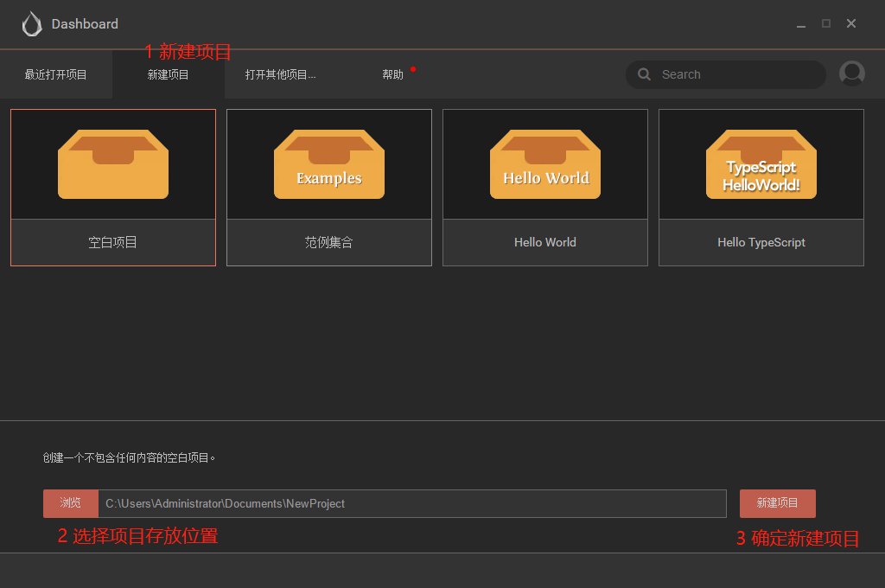
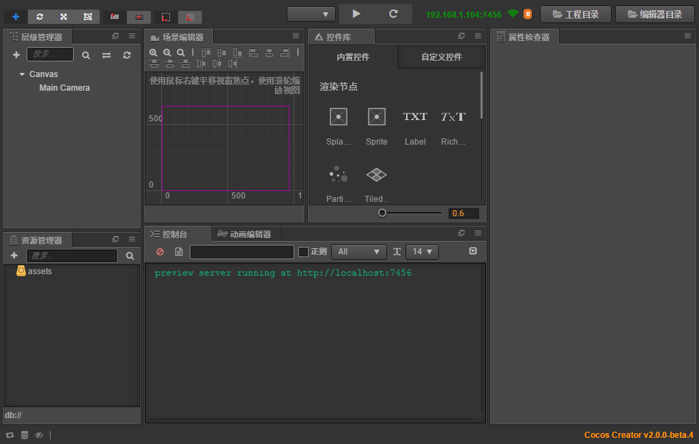

准备工作
本插件并不是面向纯小白用户,如果你连cocos creator都不知道是什么,笔者建议你先熟悉下cocos creator.
本插件需要使用者具备一定的cocos creator使用经验,比如能够制作一个简单的animation,知道什么是prefab等等类似的基础知识,如果能够编写一些简单的js脚本,那就更好了,新的大陆正在等待您去探索!
1.下载安装Cocos Creator软件
下载地址：http://www.cocos.com/creator
推荐版本：V2.x
2. 新建cocos creator项目
- 安装完毕creator之后，打开软件。
- 在Dashboard面板中选择新建项目 
- 创建项目成功之后，creator会自动打开该项目，如图 
- 一般来说creator项目的结构大致是这样子的：
- assets： 游戏的所有资源代码
- library
- packages：游戏插件安装位置
- plugin-a：插件A
- main.js
- package.json
- plugin-b：插件B
- main.js
- package.json
- plugin-a：插件A
- settings
- temp
- project.json
- jsconfig.json
3. 安装story-master插件
- 获取story-master插件安装包。
- 将插件拷贝到项目的packages目录下，为了保证插件被正确加载，重启一下creator即可。